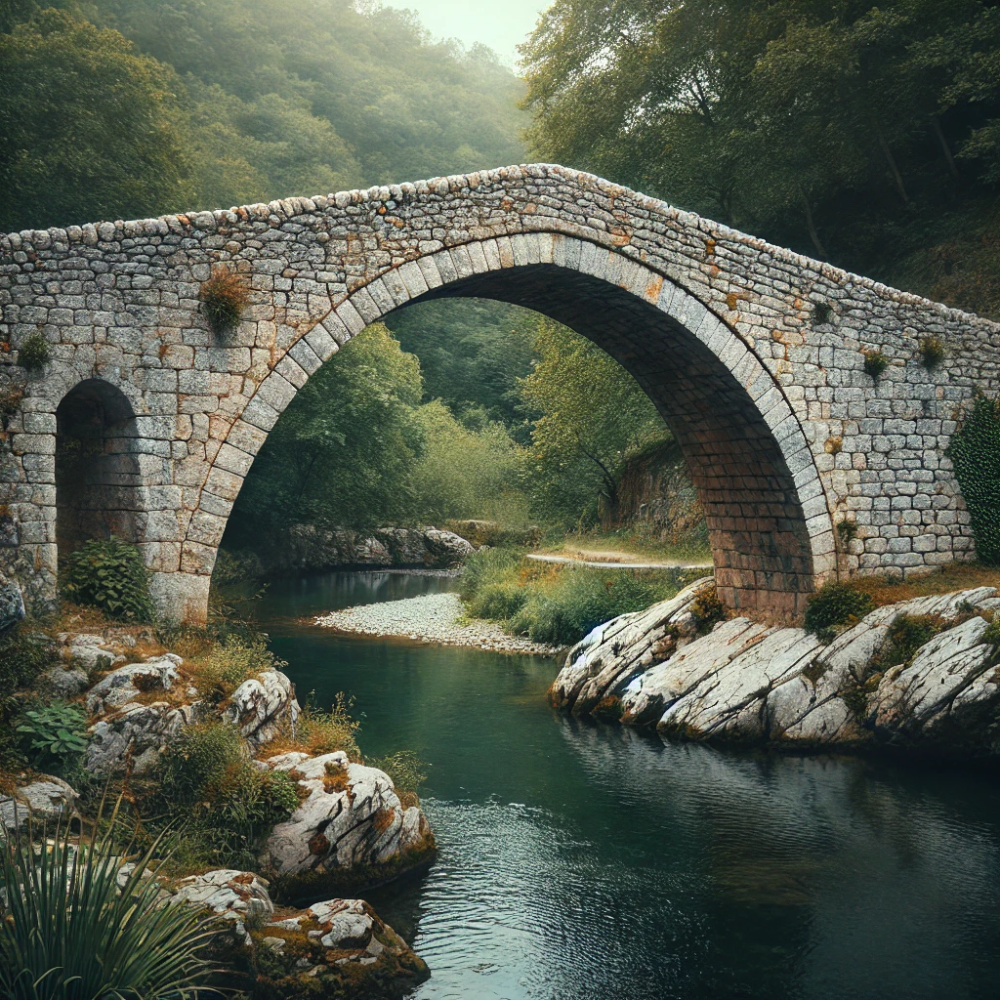
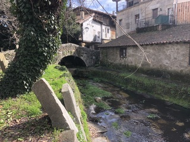

Vista lateral: El puente tiene un único arco de medio punto, típico de la Edad Media.

Entorno natural: Cruza el río Canderuelo rodeado de vegetación. Más info
🔍 Encuentra el símbolo oculto
Observa la imagen del puente y toca la zona donde crees que Gonzalo dejó su marca secreta.
Fragmento del Mensaje: escudo
QR en el pueblo: PUENTE-1400
Dato Curioso: Este puente resistió una gran crecida del río Canderuelo en 1650.